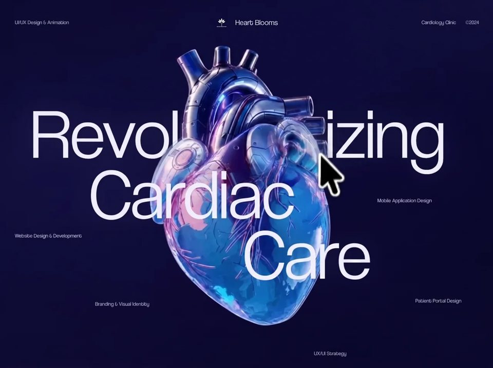

Cardia 3D
Medicalmedicalyilai-ai 公开页面
收录时间：2026-08-14正文：11,322 字符

本地预览图 · jpeg
完整提示词
Build a single-page "Heart Blooms" cardiac-care hero landing page as a Vite vanilla-JS project (no frameworks). One HTML page, one CSS file, one JS module. Recreate EXACTLY as specified.
## Concept
A full-viewport, non-scrolling dark navy hero. A giant 3-line headline "Revolutionizing / Cardiac / Care" is layered in a text–image–text sandwich with a full-bleed glass-heart image so the heart overlaps lines 2–3 but sits BEHIND line 1. Moving the mouse over the page reveals a hidden second image (the heart's back view) through a soft circular "spotlight" hole that follows the cursor. A cinematic preloader with an animated ECG monogram plays first.
## Images (exact URLs)
- FRONT image (default visible, glass heart front view):
https://images.higgs.ai/?default=1&output=webp&url=https%3A%2F%2Fd8j0ntlcm91z4.cloudfront.net%2Fuser_38xzZboKViGWJOttwIXH07lWA1P%2Fhf_20260809_011846_9520bc12-cbdc-45a0-8e81-4b3365492778.png&w=1280&q=85
- BACK image (revealed by spotlight):
https://images.higgs.ai/?default=1&output=webp&url=https%3A%2F%2Fd8j0ntlcm91z4.cloudfront.net%2Fuser_38xzZboKViGWJOttwIXH07lWA1P%2Fhf_20260812_120011_ac460224-f91c-4ecd-a507-60e9e682bd35.png&w=1280&q=85
Both are absolutely positioned inset:0, width/height 100%, object-fit: cover, stacked inside a figure#heart-stage that fills the canvas area.
## Fonts
Self-hosted "Coolvetica" via three @font-face rules, font-display: block:
- /assets/fonts/CoolveticaUl-Regular.woff2 → weight 200
- /assets/fonts/CoolveticaLt-Regular.woff2 → weight 300
- /assets/fonts/CoolveticaRg-Regular.woff2 → weight 400
Font stack: "Coolvetica", "Helvetica Neue", Helvetica, Arial, sans-serif. Body default weight 300.
## Design tokens (:root)
--c-void: #0b092e (html background); --c-display: #eeedf2; --c-label: rgba(255,255,255,0.93); --c-brand: #fff;
--gutter: clamp(1rem, 3.2vw, 2.5625rem); --pad-top: clamp(0.875rem, min(4vw, 5.4dvh), 3.1875rem);
--fs-label: clamp(0.6875rem, 1.055vw, 0.84375rem); --fs-brand: clamp(0.9375rem, min(1.64vw, 2.1dvh), 1.3125rem);
--fs-display: clamp(2rem, min(15.2vw, 19.2dvh), 12rem); --leading: 0.86; --tracking: -0.006em;
--indent-1: 6.48%; --indent-2: 18.2%; --indent-3: 49.22%;
Body: height 100dvh, min-height 100svh, overflow hidden, overscroll-behavior none, antialiased. Meta theme-color #08082a. Title: "Heart Blooms — Revolutionizing Cardiac Care".
## Stage background (main.stage, display:grid, grid-template-rows: auto 1fr, height 100dvh)
Layered backgrounds, top to bottom:
1. radial-gradient(ellipse 48% 42% at 100% 0%, rgba(24,22,78,0.56) 0%, rgba(19,17,64,0.24) 44%, rgba(8,8,42,0) 78%)
2. radial-gradient(ellipse 72% 78% at 4% 46%, rgba(21,18,68,0.58) 0%, rgba(15,13,54,0.28) 46%, rgba(8,8,42,0) 82%)
3. radial-gradient(ellipse 42% 38% at 100% 100%, rgba(18,16,61,0.28) 0%, rgba(8,8,42,0) 74%)
4. linear-gradient(145deg, #0b0a31 0%, #0d0c38 35%, #09082d 72%, #080729 100%)
background-color: #0b092e. Plus a .stage::after vignette overlay at z-index 5, pointer-events none: radial-gradient(ellipse 68% 66% at 50% 48%, rgba(4,4,16,0) 60%, rgba(4,4,16,0.12) 100%).
## Header (masthead, z-index 4, grid 1fr auto 1fr, padding var(--pad-top) var(--gutter) 0)
- Left: "UI/UX Design & Animation" (label size, letter-spacing 0.01em)
- Center: brand link — an inline SVG mark (viewBox "0 0 36 32": five filled petal/leaf paths forming a small blooming plant: "M18 13.05c-2.45-2.55-2.48-6.45 0-10.05 2.48 3.6 2.45 7.5 0 10.05Z", "M16.75 14.85c-3.7-.75-6.1-3.52-6.25-7.55 3.98.38 6.35 3.15 6.25 7.55Z", "M19.25 14.85c3.7-.75 6.1-3.52 6.25-7.55-3.98.38-6.35 3.15-6.25 7.55Z", "M16.1 18.15c-4.55-.05-7.9-2.38-9.35-6.45 4.55-.2 7.95 2.15 9.35 6.45Z", "M19.9 18.15c4.55-.05 7.9-2.38 9.35-6.45-4.55-.2-7.95 2.15-9.35 6.45Z", plus stroked stem "M18 12.5v15.75" width 1.05 and ground curve "M3.5 29.1c8.5-1.05 20.5-1.05 29 0" width .85, round caps) followed by the word "Heart Blooms" at --fs-brand, weight 300. Mark width clamp(1.375rem, min(2.5vw,3.2dvh), 2rem).
- Right (flex-end): "Cardiology Clinic" and "©2024" with gap clamp(0.75rem,1.9vw,1.5rem).
## The headline sandwich (inside .canvas, position:relative, row 2 of the stage grid)
TWO copies of the headline, absolutely positioned identically, plus the image figure between them:
- h1.display--back (z-index 1): three block spans "Revolutionizing", "Cardiac", "Care" (lines 2–3 aria-hidden). Lines 2 and 3 have visibility:hidden.
- figure.subject (z-index 2): the two full-bleed images.
- p.display--front (z-index 3, aria-hidden): same three spans; line 1 has visibility:hidden.
Net effect: "Revolutionizing" renders behind the heart, "Cardiac" and "Care" render in front of it, with perfect overlap because both copies share identical geometry.
.display geometry: position absolute, left 50%, top 49%, transform translate(-50%,-50%); width min(100%, calc(var(--fs-display) * 7.71)); font-size --fs-display; weight 300; line-height 0.86; letter-spacing -0.006em; color #eeedf2; text-shadow 0 0 clamp(1rem,4.7vw,3.75rem) rgba(120,140,255,0.18); pointer-events none; user-select none. Line indents (margin-inline-start): line 1 = 6.48%, line 2 = 18.2%, line 3 = 49.22%. Lines white-space: nowrap.
## Spotlight reveal effect
figure.subject: position absolute inset 0, z-index 2, overflow hidden, CSS vars --mx:50%, --my:50%, --spot-radius:0px, --spot-feather: clamp(3rem, 9vw, 8rem).
The FRONT img gets a mask (both -webkit-mask-image and mask-image):
radial-gradient(circle var(--spot-radius) at var(--mx) var(--my), transparent 0, transparent calc(var(--spot-radius) * 0.55), #000 calc(var(--spot-radius) + var(--spot-feather)))
— i.e. a feathered transparent hole that punches through the front image to expose the back image underneath.
JS: on pointermove over the stage, compute the cursor position as percentages of the stage rect and set --mx/--my, and set --spot-radius to 190px. On pointerleave, set --spot-radius back to 0px (hole closes). Skip attaching listeners entirely when prefers-reduced-motion: reduce.
## Floating service labels (z-index 4, absolutely positioned, --fs-label, letter-spacing 0.01em, nowrap)
- "Mobile Application Design" — left 76.33%, top 50.6%
- "Website Design & Development" — left var(--gutter), top 61%
- "Patient Portal Design" — left 83.98%, top 80.4%
- "Branding & Visual Identity" — left 19.38%, top 81.3%
- "UX/UI Strategy" — left 63.52%, top 96%
Wrapper .services uses display: contents on desktop.
## Preloader (position fixed, inset 0, z-index 100)
Background: radial-gradient(circle at 50% 46%, rgba(20,18,68,0.34), transparent 38%) over #0b092e. A ::before inset border frame: inset clamp(1.125rem,2.2vw,2.125rem), 1px solid rgba(255,255,255,0.09).
Inner .preloader__frame: absolute inset clamp(2.25rem,4.1vw,4rem), grid rows auto 1fr auto.
- Topline (grid 1fr auto 1fr, 0.5625rem, letter-spacing 0.14em, uppercase, opacity 0.55): "Heart Blooms®" | "Digital cardiac experience" | "©2024".
- Center (max-width min(30rem,76vw), centered column): a monogram SVG (viewBox 0 0 80 80) — a circle ring path "M40 4a36 36 0 1 1 0 72 36 36 0 1 1 0-72Z" stroked rgba(255,255,255,0.2) width 0.8, and an ECG/heartbeat polyline "M12 42h15l4-10 8 20 7-29 6 19h16" stroked #eeedf2 width 1.3, stroke-dasharray 110, stroke-dashoffset 110, animated with keyframes "cardiac-trace" 2.3s cubic-bezier(0.65,0,0.35,1) infinite: 0% offset 110/opacity .35 → 45%–72% offset 0/opacity 1 → 100% offset -110/opacity .35 (draw-on, hold, draw-off). Monogram width clamp(4.75rem,8vw,7rem).
Below it: status line "Initializing experience" (clamp(1.3125rem,2.2vw,2rem), weight 300, letter-spacing -0.04em) and detail line "Preparing WebGL renderer" (0.625rem, uppercase, letter-spacing 0.11em, opacity 0.48).
- Footer: a 1px-tall progress track (background rgba(255,255,255,0.13), overflow hidden) with a bar scaled by transform scaleX(progress/100), transform-origin left, transition transform 220ms linear, gradient linear-gradient(90deg, #4378ff 0%, #f24baf 100%). Under it a meta row (space-between, 0.5625rem uppercase, letter-spacing 0.13em, opacity 0.56): "High-fidelity visual assets" | a % counter ("00%" zero-padded, clamp(1.0625rem,1.8vw,1.5625rem), tabular-nums). Hidden pill "Retry loading" button (border 1px rgba(255,255,255,0.25), radius 999px, uppercase 0.625rem) shown on load error; clicking reloads the page.
## Load sequence (JS)
body starts with class "is-loading"; #app aria-busy=true. Async flow:
1. setLoading(4%, "Loading visual assets", "Fetching imagery")
2. Preload BOTH images via new Image onload promises (Promise.all), also grab document.fonts.ready
3. setLoading(70%, "Processing composition", "Finalizing layout"); init spotlight listeners
4. setLoading(93%, "Preparing final composition", "Waiting for typography and layout"); await fonts
5. Enforce a minimum 900ms total preloader time, then setLoading(100%, "Experience ready", "Visual assets loaded")
6. Remove "is-loading", add "is-ready" on body; add "is-exiting" to preloader (opacity 0, visibility hidden, transform scale(1.012), transitions: opacity 750ms cubic-bezier(0.65,0,0.35,1), transform 900ms same easing); after 900ms add "is-done" (display:none).
On any image failure: add body.has-load-error, preloader.is-error (ECG line frozen fully drawn, no animation), show retry button, status "Unable to load the experience" / "The visual assets are required. Please retry."
## Entrance animations
While is-loading, .stage is opacity 0, visibility hidden, translateY(0.75rem); on is-ready it transitions in (opacity 850ms cubic-bezier(0.22,1,0.36,1), transform 950ms same). Under prefers-reduced-motion: no-preference, .masthead, both .display copies, and each .service run keyframes "enter" (from opacity 0 / translate 0 0.875rem, to opacity 1) 0.9s cubic-bezier(0.22,0.61,0.36,1) both, with delays: back headline 0.06s, front headline 0.14s, services 0.28s. Under prefers-reduced-motion: reduce, force all animation durations to 0.01ms.
## Responsive
@media (max-aspect-ratio: 1/1): --fs-display: clamp(2rem, min(15.9vw,12.9dvh), 9rem); indents 3% / 12% / 40%; .display top 45%; services become a centered flex-wrap row pinned to the bottom (inset-inline var(--gutter), bottom max(var(--gutter), env(safe-area-inset-bottom)), gaps clamp(0.5rem,1.6dvh,1rem) × clamp(1rem,5vw,2.25rem)), each label position static.
@media (max-width: 40rem): masthead becomes single centered column — brand first, then one meta row spanning full width with "UI/UX Design & Animation" injected via ::before on the right meta (left meta hidden); tighter preloader insets (frame inset 1.875rem 1.75rem, border inset 0.875rem); preloader topline drops the center span.
@media (max-height: 32rem) and (orientation: landscape): --fs-display: clamp(1.5rem, min(11vw,17dvh), 6rem); --pad-top: clamp(0.5rem,3dvh,1rem); display top 50%; strategy label top 92%.
@media (min-aspect-ratio: 21/9): --fs-display: clamp(2rem, 14dvh, 10rem).
## Accessibility
Preloader has role=status + aria-live polite; progressbar role with aria-valuenow updates. A visually-hidden figcaption#model-status (1px clip pattern) announces "Preparing visual" → "Visual ready". Front headline copy and duplicate lines are aria-hidden. Brand link focus-visible: 2px rgba(255,255,255,0.7) outline, offset 0.375rem.把上面的提示词完整复制到支持长文本的 AI 工具中，再按需要替换品牌名、配色与文案。提示词描述的是整页结构与动效节奏，生成后建议在真实浏览器里检查首屏加载和移动端表现。
来源与版权
该条目来自公开提示词页面，原始出处信息未随页面提供。
提示词文本与预览素材的版权归原作者或原平台所有，本站仅作索引与归档。若你是权利人并希望移除本条内容，请通过联系方式告知。
同分类提示词
暂无同分类条目。